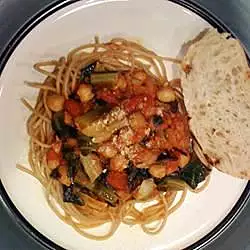

Pasta Sauce

This vegetarian spaghetti sauce is a yummy combination of collard greens, artichoke hearts, garbanzo beans, and more. I came up with this one night while trying to figure out how to get my 18-month old son to eat healthy greens. He absolutely loved it! Serve over whole wheat pasta with Parmesan cheese.
Ingredients
- 2 tablespoons olive oil
- ½ large onion, diced
- 1 bunch collard greens - rinsed, trimmed and chopped
- 3 large cloves garlic, minced
- 1 (6 ounce) can marinated artichoke hearts, undrained and chopped
- 2 cups pasta sauce (such as Prego®)
- 1 (14.5 ounce) can Italian-style diced tomatoes
- ½ (15 ounce) can garbanzo beans, drained
- 1 tablespoon white sugar
- ¼ teaspoon sea salt
Steps
- Heat olive oil in a deep skillet over medium heat; stir in onion. Saute until onion has softened and turned translucent, about 5 minutes. Add collard greens and garlic; cover and cook until greens are wilted, about 5 minutes.
- Add chopped artichoke hearts and liquid. Add pasta sauce, diced tomatoes, garbanzo beans, sugar, and salt. Bring to a simmer and cook until sauce is slightly reduced and collard greens are dark and tender, 10 to 15 minutes.
Link to Recipe